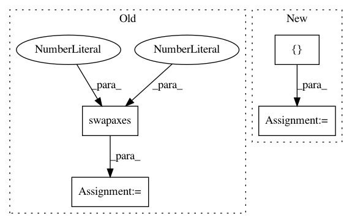

d55bad55b6a9e97f800c97c73038bc5ed8d4b31f,arviz/data/io_pystan.py,PyStanConverter,prior_to_xarray,#PyStanConverter#,201
Before Change
values = np.expand_dims(values, -1)
else:
values = np.expand_dims(values, 0)
values = np.swapaxes(values, 0, 1)
data[key] = values
return dict_to_dataset(data, library=self.pystan, coords=self.coords, dims=self.dims)
@requires("fit")
@requires("observed_data")
After Change
if prior_predictive is None:
prior_predictive = []
elif isinstance(prior_predictive, str):
prior_predictive = [prior_predictive]
ignore = prior_predictive + ["lp__"]
data = get_draws(prior, ignore=ignore)
In pattern: SUPERPATTERN
Frequency: 3
Non-data size: 4
Instances
Project Name: arviz-devs/arviz
Commit Name: d55bad55b6a9e97f800c97c73038bc5ed8d4b31f
Time: 2018-11-03
Author: ahartikainen@users.noreply.github.com
File Name: arviz/data/io_pystan.py
Class Name: PyStanConverter
Method Name: prior_to_xarray
Project Name: bashtage/linearmodels
Commit Name: 548f35f232e13d87d150fa5b5b00ecd2123dc206
Time: 2018-06-02
Author: kevin.k.sheppard@gmail.com
File Name: linearmodels/tests/panel/test_data.py
Class Name:
Method Name: test_incorrect_time_axis
Project Name: mne-tools/mne-python
Commit Name: 7db3238ce80d094bc65518486c4f3d1c83421640
Time: 2021-03-22
Author: 42982039+vagechirkov@users.noreply.github.com
File Name: mne/viz/ica.py
Class Name:
Method Name: plot_ica_properties